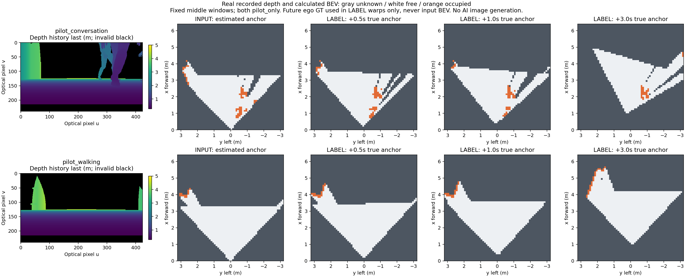

2episode · 517window · 910depth frame khớp raw từng byte · 2.068BEV grid tính lại. Loader chạy không cần ROS; observation độc lập LABEL. Không chạy thêm Gazebo, không train WM/RL.
Tải bộ portable (~31.7MB ZIP) · Tài liệu bàn giao MuJoCo · Audit · Summary
Giải nén vào thư mục mới rồi chạy python tools/inspect_pilot.py --dataset . với Python+NumPy. Gói ZIP chứa đủ arrays/loader/calibration/masks/audit, raw MCAP giữ ở máy gốc.

Depth là bản ghi thật. BEV tương lai là LABEL tính từ depth đã ghi; không phải dự đoán WM. X tiến hướng lên, y trái nằm phía trái; gray=unknown,white=free,orange=occupied. Vùng unknown giữ nguyên theo FOV/occlusion.
Pilot_only, không chia train/validation/test. Target hợp lệ không đồng nghĩa cho phép train: training_authorized=false,fit_allowed=false. H1–H5,person association và RL reward còn invalid.
Đã đủ mốc tạm dừng phase hiện tại để bàn giao MuJoCo. Chi tiết và giới hạn · ZIP SHA256 · Video nguồn và preset